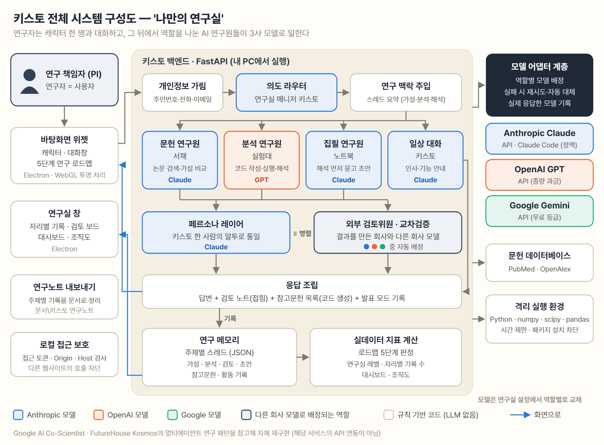
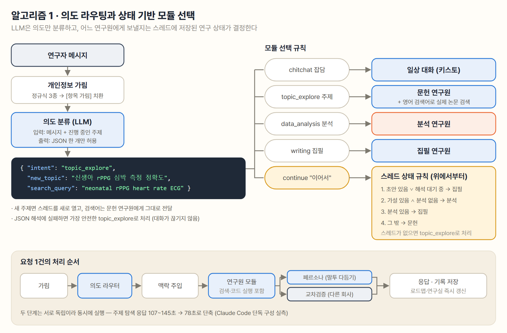
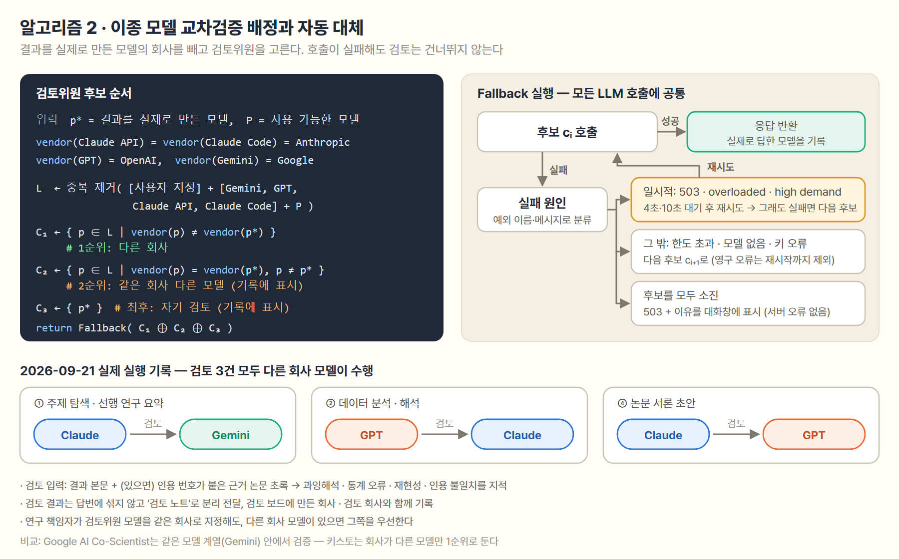
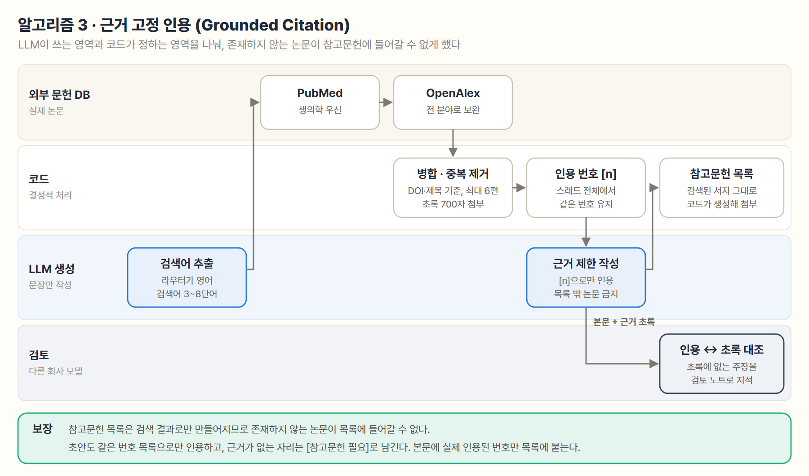
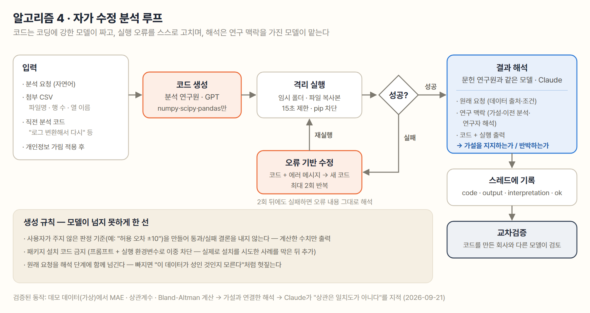
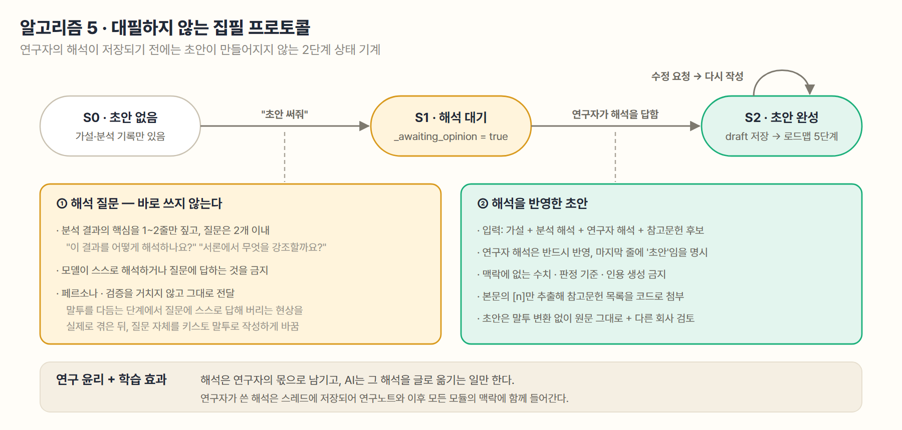
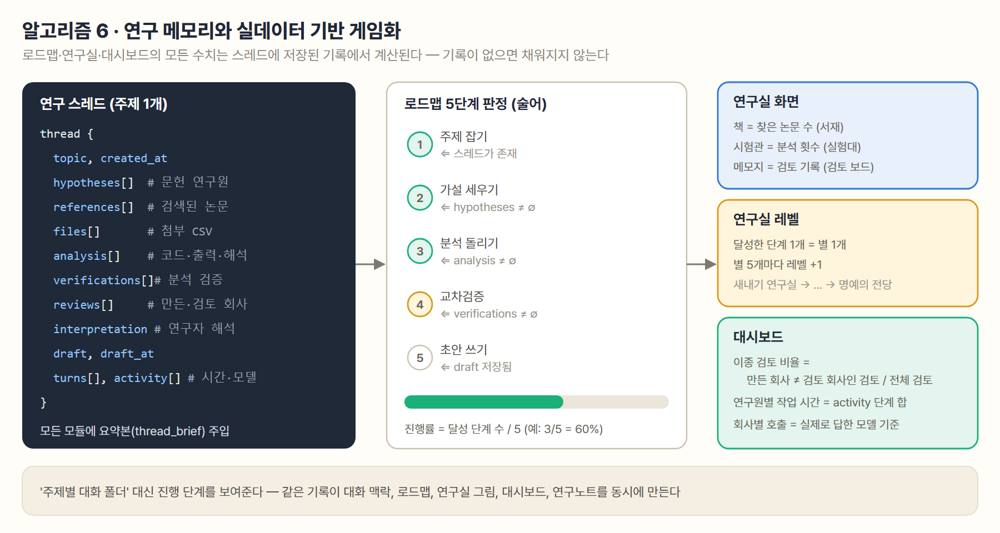

도메인 경험이 부족한 신입 연구자는 선행 연구 파악·가설 설정·분석 해석·논문 서론 작성에서 오래 막힌다. 범용 AI 챗은 도움이 되지만 다음 네 가지가 남는다.
| 원칙 | 구현 |
|---|---|
| 하나의 창구, 여러 전문가 | 연구자는 캐릭터 '키스토' 한 명과 대화한다. 뒤에서는 역할별 연구원 모듈이 일하고, 페르소나 레이어가 모든 답변을 한 사람의 말투로 통일한다. |
| 다른 회사 모델의 검토 | 결과를 실제로 만든 모델과 회사가 다른 모델을 검토위원 1순위로 코드가 강제 배정한다 (알고리즘 2). |
| 근거는 코드가 보증 | 참고문헌 목록은 LLM이 쓰지 않고, 실제 검색 결과로 코드가 만든다 (알고리즘 3). |
| 해석은 연구자의 몫 | 초안 요청에 먼저 연구자의 해석을 묻고, 그 해석이 저장된 뒤에만 초안을 쓴다 (알고리즘 5). |
| 보이는 진척은 실데이터로 | 로드맵·연구실·대시보드의 모든 수치는 저장된 기록에서 계산한다 (알고리즘 6). |
| 패턴 차용, 연동 주장 없음 | Google AI Co-Scientist, FutureHouse Kosmos의 멀티에이전트 패턴을 참고해 자체 재구현했다. 두 서비스는 공개 API가 없으며 연동하지 않았다. |
로컬 PC에서 FastAPI 백엔드와 Electron 위젯이 함께 실행된다. 연구자의 메시지는 개인정보 가림 → 의도 라우터 → 연구 맥락 주입 → 연구원 모듈을 거친 뒤, 페르소나 다듬기와 교차검증을 병렬로 받아 한 번에 응답된다. 모든 결과는 주제별 스레드에 기록되고, 그 기록에서 로드맵·연구실·대시보드가 계산된다.

| 구성원 | 자리 | 기본 모델 | 하는 일 | 구현 |
|---|---|---|---|---|
| 연구실 매니저 | 위젯 | Claude | 의도 분류, 말투 통일 | orchestrator/router.py, persona.py |
| 문헌 연구원 | 서재 | Claude | 실제 논문 검색, 선행 연구 요약, 후보 가설 비교 | modules/research_coach.py, literature.py |
| 분석 연구원 | 실험대 | GPT | 분석 코드 작성 → 격리 실행 → 자동 수정 | modules/analysis_partner.py, sandbox/ |
| 집필 연구원 | 노트북 | Claude | 해석 질문 → 해석을 반영한 초안 | modules/writing_coach.py |
| 외부 검토위원 | 검토 보드 | 다른 회사 | 과잉해석·통계 오류·인용 불일치 지적 | modules/verifier.py, config.py |
역할별 모델은 연구실 화면의 '연구원 명단'에서 연구 책임자가 바꿀 수 있고(GET/PUT /lab/roles),
키가 없는 모델은 자동으로 다른 모델이 대신한다. 모델 어댑터는 Claude API, Claude Code(정액 구독), OpenAI, Gemini 4종이다.
문제. "이걸로 분석해 줘", "논문에 녹여 줘"처럼 연구 대화의 상당수는 앞선 맥락이 있어야 의미가 정해진다. LLM에게 모듈 선택까지 맡기면 파이프라인 단계를 건너뛰거나 되돌아가는 오류가 생긴다.
방법. LLM은 5개 의도 중 하나와 (필요하면) 새 주제 이름·영어 검색어만 JSON으로 분류한다. 어느 연구원에게
보낼지는 스레드에 저장된 연구 상태에 대한 규칙이 결정한다. JSON 해석에 실패하면 가장 안전한 topic_explore로 처리한다.

문제. 같은 모델이 자기 결과를 검증하면 같은 편향을 공유한다. Google AI Co-Scientist도 같은 모델 계열(Gemini) 안에서 생성과 검증을 한다. 또 외부 API는 실제로 자주 막힌다 — 9월 21일 첫 실행에서 요청 폭주(503)와 모델 없음(404)을 겪었다.
방법. 결과를 실제로 만든 모델 p*의 회사를 기준으로 후보를 세 층으로 정렬한다: 다른 회사 → 같은 회사 다른 모델 → 자기 검토. Claude API와 Claude Code는 같은 회사로 본다. 각 후보는 공통 Fallback 절차로 호출되며, 일시적 오류는 4초·10초 대기 후 재시도하고 그 밖의 오류는 다음 후보로 넘어간다. 검토를 건너뛰지는 않으며, 어느 층에서 검토했는지 기록에 남긴다.

tracing.note_answer)해 생성자·검토자 판정의 근거로 쓴다.문제. LLM은 존재하지 않는 논문을 그럴듯한 서지 형식으로 만들어 낸다. 프롬프트로 "지어내지 마라"라고만 하면 막을 수 없다.
방법. 생성 영역과 결정 영역을 분리한다. 라우터가 뽑은 영어 검색어로 PubMed(생의학 우선)와 OpenAlex(전 분야 보완)를 검색해 DOI·제목 기준으로 중복을 없애고 최대 6편을 고른다. 논문에는 스레드 전체에서 유지되는 번호 [n]을 붙인다. LLM은 이 번호로만 인용할 수 있고, 참고문헌 목록은 본문에서 실제로 쓰인 번호만 골라 코드가 검색된 서지 그대로 붙인다. 검토위원은 인용 문장과 해당 초록을 대조한다.

[참고문헌 필요]로 남겼다. 검토위원(GPT)은 인용 [6]이 해당 문장의 근거로 맞지 않을 가능성을 지적했다.문제. 생성된 분석 코드는 한 번에 돌지 않는 경우가 많고, 수치만으로는 연구 질문에 대한 답이 되지 않는다.
방법. 코딩에 강한 모델(GPT)이 코드를 쓰고, 임시 폴더에서 첨부 파일의 복사본만으로 격리 실행한다. 실패하면 코드와 에러 메시지를 넘겨 최대 2회 스스로 고친다. 해석은 문헌 연구원과 같은 모델이 원래 요청 + 연구 맥락(가설) + 코드 + 출력을 함께 보고 가설을 지지하는지 반박하는지 판단한다. 결과는 스레드에 기록되고 다른 회사 모델의 검토를 받는다.

문제. "초안 써 줘"에 곧바로 완성된 글을 주면 연구자는 자기 결과를 해석하는 연습을 건너뛰게 되고, 연구윤리상 대필이 된다.
방법. 2단계 상태 기계로 구현했다. 첫 요청(S0 → S1)에는 분석 핵심만 짚고 해석을 묻는 질문 2개 이내로 답한다. 연구자의 답(S1 → S2)이 오면 그것을 반드시 반영해 초안을 쓰고, 해석은 스레드에 저장되어 이후 모든 모듈의 맥락과 연구노트에 들어간다. 해석 질문은 페르소나를 거치지 않는다 — 말투를 다듬는 단계가 질문에 스스로 답해 버리는 현상을 실제로 겪었기 때문이다. 초안 역시 말투 변환 없이 원문 그대로 전달한다.

문제. 게임 요소가 실제 진척과 무관하게 움직이면 장식에 그치고 신뢰를 잃는다. 또 모듈마다 현재 메시지만 받으면 앞선 연구를 잊는다.
방법. 주제 하나를 스레드 하나로 저장하고, 그 요약본(thread_brief)을 모든 모듈에 주입한다. 기록이 없을 때는
맥락을 넘기지 않는다 — 빈 맥락을 주면 모델이 "지난번에 말씀드린 것처럼"이라며 없는 대화를 지어낸다.
로드맵 5단계는 저장된 필드에 대한 술어로 판정하고, 연구실의 책·시험관·메모지, 레벨, 대시보드 지표도 같은 기록에서 계산한다.

로드맵 5단계(주제 잡기 → 가설 → 분석 → 교차검증 → 초안)는 AutoResearch 5단계 프레임워크에 대응한다. "주제별 대화 폴더" 대신 진행 단계를 보여주는 방식을 택해 Claude·ChatGPT Projects와 구별된다.
2026-09-21 scripts/e2e.py로 데모 시나리오(신생아 카메라 비접촉 심박 측정 vs 심전도 일치도)를 Anthropic·OpenAI·Google
3사 모델을 동시에 연동해 실행한 기록이다. 시간은 키스토 시스템의 동작을 잰 것이며, 분석 수치는 가상 데이터로 계산했다.
| 단계 | 만든 모델 | 검토 모델 | 이종 검증 | 소요 |
|---|---|---|---|---|
| ① 주제 탐색 (실제 논문 6편 검색) | Claude | Gemini | O | 82초 |
| ② 데이터 분석 (코드 작성·실행·해석) | GPT | Claude | O | 90초 |
| ③ 해석 질문 (대필 금지) | Claude | — (검토할 결과 없음) | – | 12초 |
| ④ 서론 초안 (연구자 해석 반영) | Claude | GPT | O | 107초 |
| 합계 | 3사 모두 참여 | 3 / 3 | 292초 | |
같은 시나리오의 소요 시간은 435초(순차 실행) → 297초(검토·말투 병렬화) → 292초(3사 구성)로 줄었다.
| 검토 | 지적 내용 |
|---|---|
| Claude → Gemini | 근거 논문의 NIRS(접촉식)를 비접촉 기술로 잘못 설명, 초록에 이미 있는 기법을 연구 공백처럼 서술 |
| GPT → Claude | 피어슨 r은 일치도가 아니라 연관성 지표 — r=0.95로 측정 일치를 주장하는 과대해석, 편향의 신뢰구간 누락 |
| Claude → GPT | ①의 NIRS 오류가 초안에 남아 있음을 다시 지적, 인용 [6]이 해당 문장의 근거로 맞지 않을 가능성 |
scripts/verifier_eval.py).privacy.py).
영유아 연구처럼 민감한 데이터에서 실수로 붙여 넣은 식별정보가 나가지 않게 하는 최소한의 장치다..env에만 두고 저장소에 넣지 않는다.